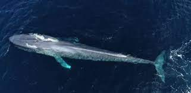
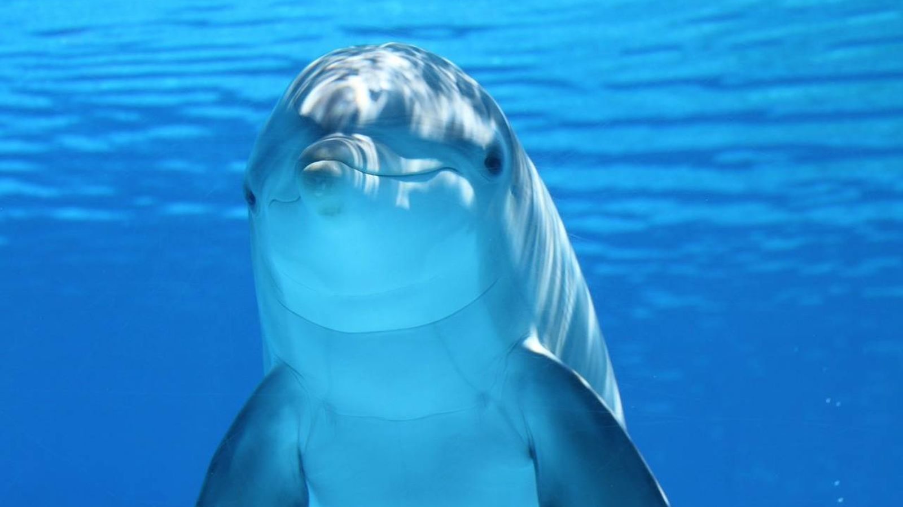
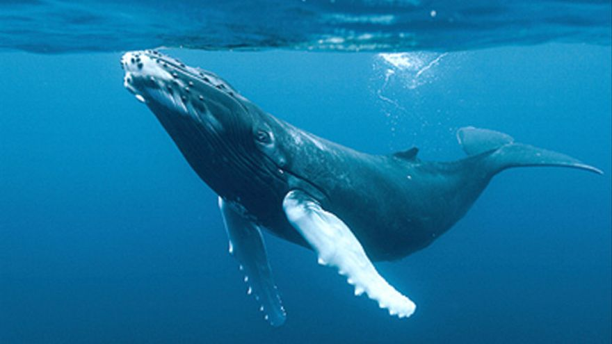

Se distribuye principalmente en aguas de la región ártica del norte de Canadá, los mares del lado ruso del océano Ártico y al norte del océano Atlántico.Habita principalmente en torno a los bloques de hielo que se forman durante los inviernos prolongados del Ártico, migrando a las bahías y fiordos circumpolares durante el verano. Se cree que la población mundial es de algo más de 75 000 ejemplares. En 2008 fue catalogado en la Lista Roja de la UICN como especie casi amenazada, debido a que se mantiene una caza significativa, controlada, por parte del pueblo inuit en Canadá y Groenlandia (Dinamarca).
Los narvales son ballenas medianas que miden entre 13 y 18 pies de largo, sin incluir el colmillo largo que se ve en la mayoría de los machos, cuya medida promedio es de aproximadamente 6 a 8 pies. Este colmillo distintivo no es un cuerno sino un diente largo y en espiral que perfora el labio superior. Esta especie es la única clasificada dentro del género Monodon. A su vez pertenece a la familia taxonómica Monodontidae, taxón que tan solo comparte con la beluga (Delphinapterus leucas). Puesto que las otras dos especies y géneros de la familia están extintas (Denebola y Bohaskaia). En cualquier caso, se incluyen en el Suborden Odontoceti, que corresponde al grupo de los Odontocetos, los cetáceos dentados, grupo al que también pertenecen las orcas, por ejemplo. Todos ellos se incluyen dentro del Orden Cetacea, los cetáceos, como las ballenas. A su vez forman parte de la Case Mammalia, los mamíferos, dentro del Filo Chordata.
|  |
|
|  |
 |
 |